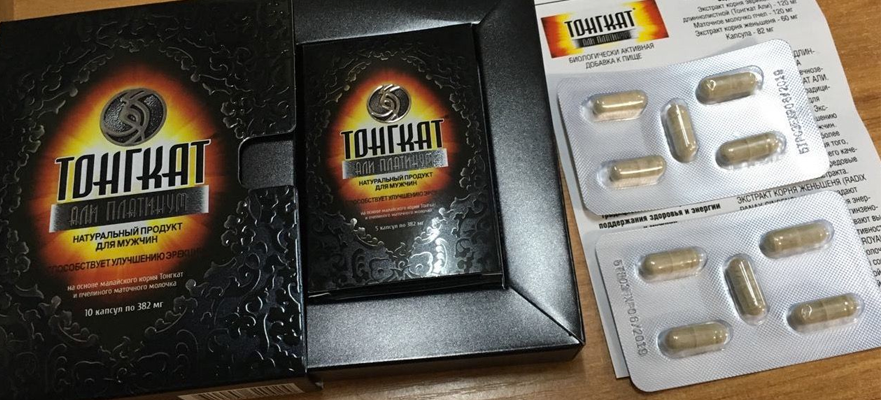

Сейчас большое количество мужчин сталкиваются с эректильной дисфункцией. Происходит это из-за большого количества стрессовых ситуаций, неправильного питания, отсутствия физических нагрузок и наличия некоторых заболеваний. Таблетки для повышения потенции обеспечивают достаточно сильный и продолжительный эффект.
Лечение медикаментозными препаратами необходимо начинать только после консультации со специалистом. Сначала необходимо выявить причину эректильной дисфункции и только после этого подбирать подходящий препарат для улучшения работы предстательной железы.
Синтетические лекарства в современной медицине составляют важную, доминирующую группу. К химическим лекарственным препаратам, имеющимся в арсенале медицины, предъявляются очень высокие требования, совсем иные, чем к растительным препаратам. Более строгой оценке подлежат как их лечебные свойства, так и условия применения.
Синтетические лекарства в современной медицине составляют важную, доминирующую группу. К химическим лекарственным препаратам, имеющимся в арсенале медицины, предъявляются очень высокие требования, совсем иные, чем к растительным препаратам. Более строгой оценке подлежат как их лечебные свойства, так и условия применения. Синтетические лекарства в современной медицине составляют важную, доминирующую группу. К химическим лекарственным препаратам, имеющимся в арсенале медицины, предъявляются очень высокие требования, совсем иные, чем к растительным препаратам. Более строгой оценке подлежат как их лечебные свойства, так и условия применения.
ОГЛАВЛЕНИЕ
Красивый термин вполне объяснимому психофизиологическому состоянию придумал Зигмунд Фрейд. Этим словом он назвал желание близости с противоположным полом. Дословно термин переводится как “желание, влечение, необходимость обладать чем-либо или кем-либо”.
Сегодня либидо у мужчин и женщин получило более узкое значение – это половое влечение и стремление к вступлению в интимные отношения.
ЛИБИДО - ЭТО КОМПЛЕКСНОЕ ПОНЯТИЕ
Оно включает взаимодействие физиологических процессов и духовной силы. Т.е. сначала мозг получает сигнал о том, что объект противоположного пола его заинтересовал, а уже после на этот интерес реагируют железы половых органов.
МЕДИКАМЕНТОЗНЫЕ СРЕДСТВА
Рассмотрим список самых популярных и лучших синтетических лекарств для поднятия потенции у мужчин:
- «Виагра» (Силденафил)
- «Левитра» (Варденафил)
- «Сиалис» (Тадалафил)
- «Импаза»
- «Зидена»
- «Динамико»
Этот препарат одним из первых появился на фармакологическом рынке. Его название знакомо многим мужчинам. «Виагра», благодаря ее компонентам, положительно влияет на улучшение кровоснабжения сосудов полового члена, является одним из эффективных препаратов для повышения потенции.
Продолжительность действия одной таблетки составляет четыре часа. Специалисты рекомендуют начинать прием с половины таблетки, постепенно увеличивая дозу до целой. Среди противопоказаний выделяют индивидуальную непереносимость компонентов, заболевания сердца и печени.
В связи с большой популярностью «Виагры» среди мужчин широко производятся ее аналоги (дженерики), повышающие потенцию. Это «Дженерик Виагра», «Силдигра», «Камагра Голд» и «Сухагра».
Действующим веществом всех подобных препаратов является силденафила цитрат. Именно благодаря ему происходит повышение кровоснабжения полового члена. Какие аналоги подходят мужчине лучше всего, определит врач. Максимальная суточная доза составляет 150 мг.
ПРЕИМУЩЕСТВА И НЕДОСТАТКИ ДАННОГО ПРЕПАРАТА
- Содержит несколько незаменимых кислот, стимулирующих белковый обмен. Применяется внутривенно.
- Рекомендован только мужчинам. Способствует наращиванию мышц без жировых отложений.
- Повышает аппетит, ускоряет регенерацию тканей.
- Увеличивает нежировую массу тела. Препарат не назначается женщинам.
- Полезное для здоровья средство повышает общий тонус, аппетит, нормализует обмен веществ и улучшает усвоение пищи. Элькар для инъекций можно заменить раствором для внутреннего применения.
- Противопоказан женщинам
Таблетки для набора веса могут нарушить гормональный фон. Поэтому перед применением лучше проконсультироваться с врачом. При дефиците массы нужно проверить работу печени, поджелудочной, устранить неполадки с пищеварением и психологические проблемы.Китайские средства 
Какие средства из этой группы лучше всего подходят для увеличения либидо и усиления потенции? Китайские таблетки для повышения потенции – это, прежде всего, БАДы для усиления и улучшения качества сексуальной жизни мужчин. В своем составе они содержат преимущественно лучшие для повышения потенции вещества, взятые из растений. Наиболее распространенными из них являются:
- гриб линчжи;
- родиола розовая;
- ягоды годжи.
Китайские средства, повышающие потенцию, всегда славились своей эффективностью и безопасностью.
ЛУЧШИЕ ИЗ НИХ СЛЕДУЮЩИЕ
| Наименование | Способ приема | За сколько принимать | Время действия |
|---|---|---|---|
| Хуэй Чжун Дан | Внутривенно | 2 дня | 30 секунд |
| Хуэй Чжун Дан | Внутривенно | 2 дня | 30 секунд |
| Хуэй Чжун Дан | Внутривенно | 2 дня | 30 секунд |
| Хуэй Чжун Дан | Внутривенно | 2 дня | 30 секунд |